Variable Priority for Global and Individual Variable Selection:
Methods and Software
University of Miami
Moffitt’s Bio-Data Club
Overview
🌍 VarPro
Variable Priority for Global Variable Selection
- Model-independent variable importance
- Based on rule-and-release regions
- Targets population-level effects
- Identifies variables driving the conditional mean
👤 iVarPro
Variable Priority for Individual Variable Selection
- Extends VarPro to individual level
- Estimates local gradients within rules
- Captures heterogeneity across subjects
- Enables personalized interpretation
💻 Software
R package: varPro
- Efficient implementation of VarPro & iVarPro
- User-friendly workflow for analysis
Resources: - Tutorials and examples
🔗 https://www.varprotools.org/
Overview
🌍 VarPro
Variable Priority for Global Variable Selection
- Model-independent variable importance
- Based on rule-and-release regions
- Targets population-level effects
- Identifies variables driving the conditional mean
👤 iVarPro
Variable Priority for Individual Variable Selection
- Extends VarPro to individual level
- Estimates local gradients within rules
- Captures heterogeneity across subjects
- Enables personalized interpretation
💻 Software
R package: varPro
- Efficient implementation of VarPro & iVarPro
- User-friendly workflow for analysis
Resources: - Tutorials and examples
🔗 https://www.varprotools.org/
Background and Related Work
Linear regression: \[ y_i = \beta_0 + \beta_1 x_{i1} + \cdots + \beta_p x_{ip} \] Prediction and variable selection are simultaneous where coefficients \(\beta_j\) directly encode importance
Nonparametric Models: The Problem
No explicit coefficients in the prediction function: \[ \hat{y} = f(x_1, x_2, \dots, x_p) \] How do we assess variable importance?
Existing Approaches
- Permutation Variable Importance
| \[\hat{y}\] | \[x_1\] | \[x_2\] | \[x_3\] |
|---|---|---|---|
| 2.1 | 1 | 0 | 3 |
| 3.5 | 2 | 1 | 1 |
| 1.8 | 0 | 1 | 2 |
| \[\hat{y}^{perm}\] | \[x_1\] | \[x_2\] | \[x_3\] |
|---|---|---|---|
| 2.9 | 1 | 0 | 1 |
| 2.7 | 2 | 1 | 3 |
| 2.0 | 0 | 1 | 2 |
- Knockoff Methods
⚠️ Both rely on creating artificial data
Motivation
We need a method that avoids artificial data generation and preserves data structure
👉 This leads to Variable Priority (VarPro)
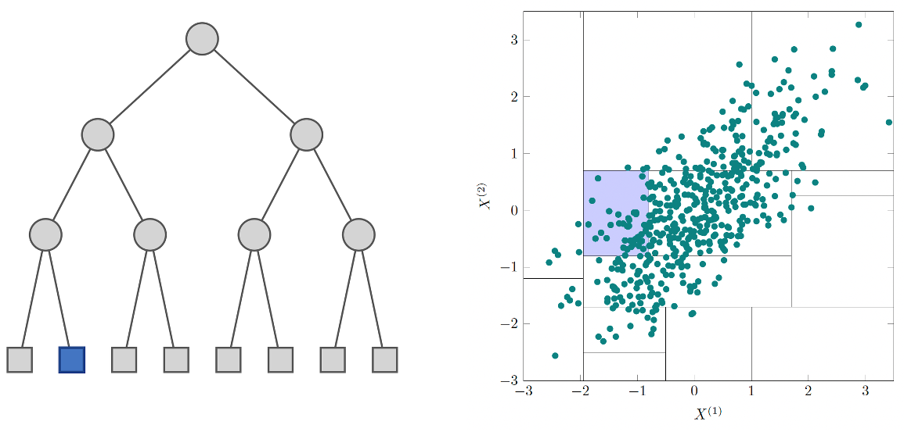
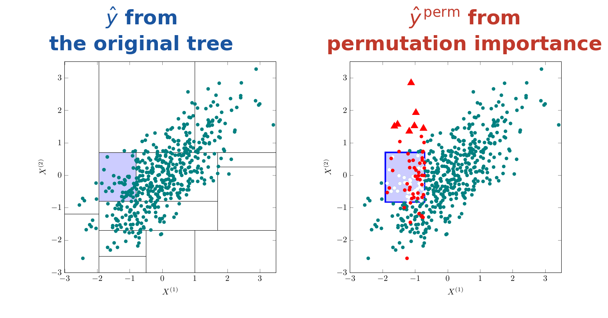
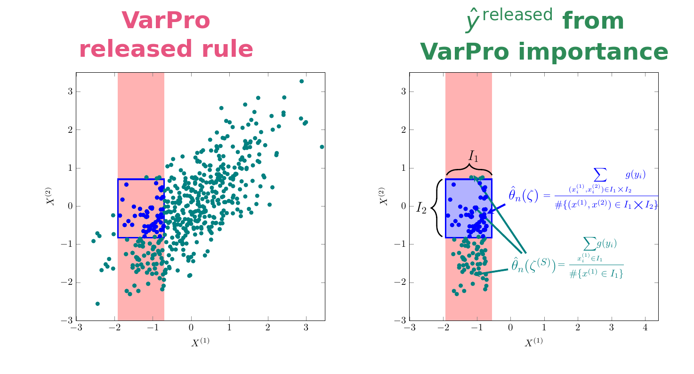
Variable Priority (VarPro)
``Rule-and-Release” Approach
VarPro provides a model-independent framework for measuring variable importance based on rule regions in the feature space
Key ideas:
- Use rules derived from tree-based partitions
- Measure local conditional mean sensitivity within each rule region
- Aggregate rule-level contributions to obtain global importance scores
Data Setup
Assume a dataset \(\{(X_i, Y_i)\}_{i=1}^n\)
where
- \(X_i = (X_{i1}, \ldots, X_{ip})\) are predictors
- \(Y_i\) is the outcome
Goal: identify which variables drive the target functional
\[ \psi(\mathbf{X}) = \mathbb{E}[g(Y) \mid \mathbf{X}] \]
where \(g\) is chosen to reflect the scientific question (e.g., \(g(Y)=Y\) for regression, \(g(Y)=I\{Y=c\}\) for classification)
The true signal set \(\mathcal{S} \subseteq \{1,\ldots,p\}\) indexes variables that genuinely influence \(\psi(\mathbf{X})\); the complementary noise set is
\[ \mathcal{N} = \{1,\ldots,p\} \setminus \mathcal{S} \]
Goal: recover \(\mathcal{S}\) and screen out \(\mathcal{N}\)
Rule Regions
A rule \(\zeta\) specifies a local region of the feature space \(\mathcal{X}\):
\[ R(\zeta) \subseteq \mathcal{X} \]
Rules are obtained from tree paths (e.g., age \(> 50\) and tumor size \(< 2\) cm).
Local estimator within rule \(\zeta\):
\[ \hat{\theta}_n(\zeta) = \frac{1}{\#\{i \mid \mathbf{X}_i \in R(\zeta)\}} \sum_{i:\,\mathbf{X}_i \in R(\zeta)} g(Y_i) \]
Local Variable Sensitivity
To test whether \(X^{(j)}\) matters, release it from rule \(\zeta\) by setting \(S = \{j\}\):
\[ R(\zeta^{(S)}) = \bigl\{\mathbf{x} \in \mathcal{X} \mid \mathbf{x}^{\setminus(S)} \in R(\zeta)\bigr\} \]
with local estimator \(\hat{\theta}_n(\zeta^{(S)}) = \frac{1}{\#\{i \mid \mathbf{X}_i \in R(\zeta^{(S)})\}} \sum_{i \mid \mathbf{X}_i \in R(\zeta^{(S)})} g(Y_i)\)
The local importance score compares averages before and after releasing:
\[ \bigl|\hat{\theta}_n(\zeta^{(S)}) - \hat{\theta}_n(\zeta)\bigr| \]
- Large difference → \(X^{(j)}\) strongly influences predictions in this region
- Near zero → \(X^{(j)}\) is locally irrelevant (noise behavior)
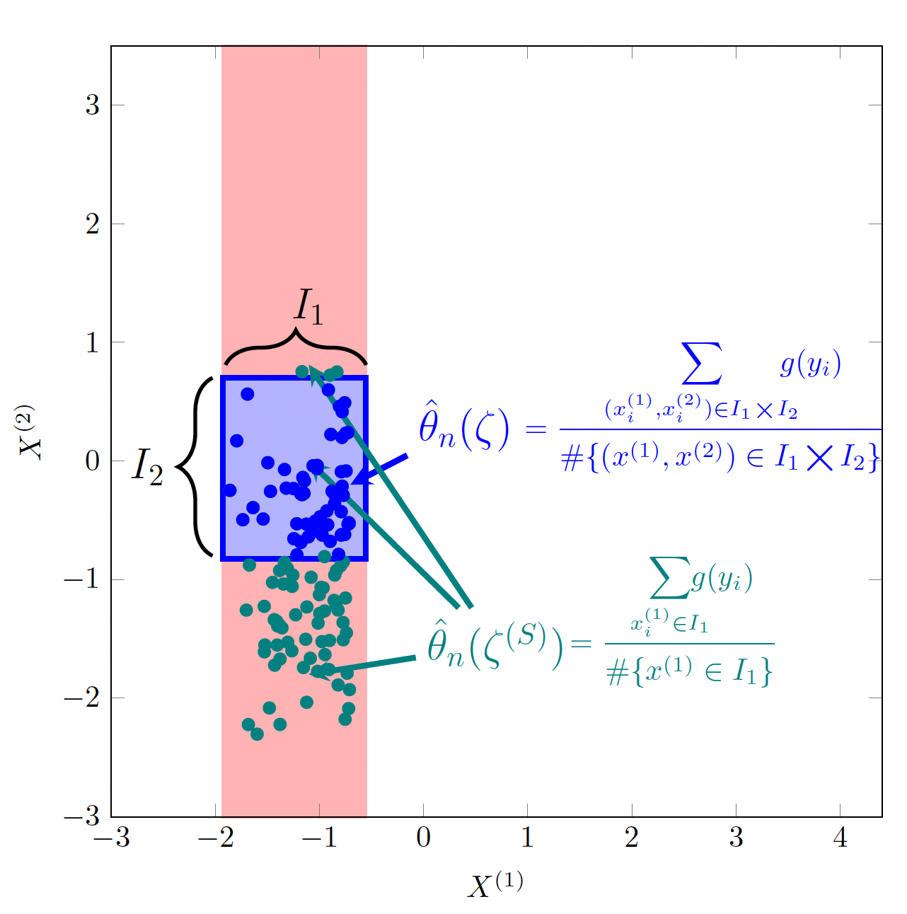
Examples of Release Regions
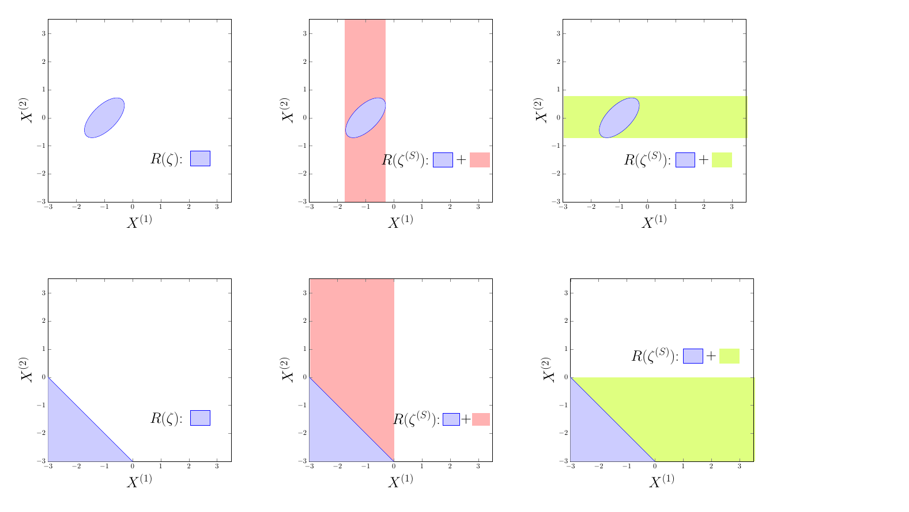
- Top row: elliptical rule; Bottom row: hyperplane rule
- Middle column: release \(X^{(2)}\) (\(S = \{2\}\)); Right column: release \(X^{(1)}\) (\(S = \{1\}\))
- Release is coordinate-specific: each variable is released independently along its own axis
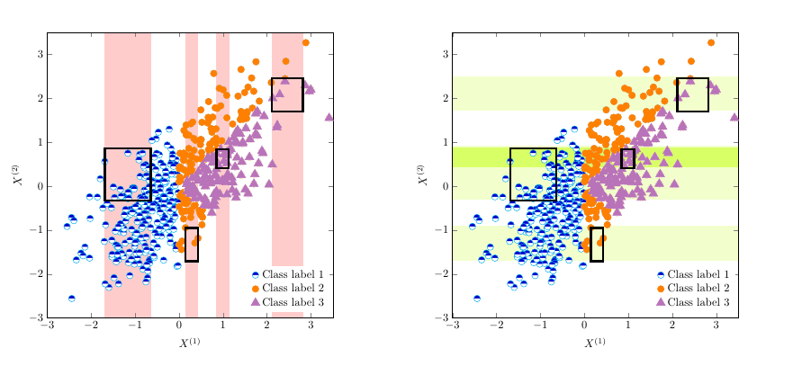
- The computed statistic \(|\hat{\theta}_n(\zeta^{(S)}) - \hat{\theta}_n(\zeta)|\) can target any class label by choosing \(g(Y) = \mathbf{1}\{Y = c\}\)
- Release regions and importance scores are therefore both coordinate-specific and class-specific
Aggregating Across Rules
Aggregate the local scores over \(K_n\) rules with weights \(W_{n,k}\) proportional to rule support:
\[ \Delta_n(S) = \sum_{k=1}^{K_n} W_{n,k} \, \bigl|\hat{\theta}_n(\zeta_{n,k}^{(S)}) - \hat{\theta}_n(\zeta_{n,k})\bigr| \]
- \(\Delta_n(\{j\})\) measures global variable priority for \(X^{(j)}\), where set \(S = \{j\}\)
- Weights \(W_{n,k} = m_{n,k} / \sum_j m_{n,j}\) prioritize rules with more observations
Theoretical Guarantee
Theorem 1 (Lu & Ishwaran, 2024). Assume (A1)–(A4). Suppose \(K_n = O(\log n)\) and \(\min_k m_{n,k} \geq m_n\), where \(m_n = n^{1/2}\gamma_n\) and \(\gamma_n \to \infty\) with \(\gamma_n / \log n \to \infty\). Then
\[ \Delta_n(S) \xrightarrow{P} 0 \quad \text{whenever } S \subseteq \mathcal{N} \]
- Noise variables are asymptotically filtered out
- No synthetic permutations or joint distribution assumptions required
- Conditions (A1)–(A4): finite moments, smoothness, shrinking rule regions, bounded gradients
- Holds for regression, classification, and survival settings
Algorithm Outline
Repeat for \(b = 1, \ldots, B\):
- Split data \(\mathcal{D}\) into rule-generation set \(\mathcal{D}^b_\text{rg}\) (\(63.2\%\)) and scoring set \(\mathcal{D}^b_\text{vp}\) (\(36.8\%\))
- Generate rules from \(\mathcal{D}^b_\text{rg}\) using randomized trees with guided feature sampling (weights from lasso + shallow-tree split frequencies)
- Score each variable \(X^{(s)}\) on \(\mathcal{D}^b_\text{vp}\): compute \(\Delta_n^b(s)\) by aggregating \(|\hat{\theta}_n(\zeta_{n,k}^{(s)}) - \hat{\theta}_n(\zeta_{n,k})|\) over \(K_n\) rules
After \(B\) replications, compute the standardized importance score:
\[ I_{n,B}(X^{(s)}) = \frac{\bar{\Delta}_n(s)}{\sqrt{\widehat{\mathrm{Var}}_n(s)}} \]
Declare \(X^{(s)}\) a signal if \(I_{n,B}(X^{(s)}) > Z_0\) (e.g. \(Z_0 = 2\), or chosen by out-of-sample validation)
Simulation Studies: Regression
20 synthetic datasets; most use \(N = 2{,}000\), \(p = 40\); high-dimensional designs (supX, sup2X) use \(N = 500\), \(p = 200\); designs include:
- Linear (lm, lmi1, lmi2), nonlinear (friedman1, friedman3, cobra2/8)
- Interaction-based (inx1, inx2, inx3), support-constrained (sup, supX)
- Independent and correlated features (Gaussian copula, \(\rho = 0.9\))
| Comparison methods | Description |
|---|---|
| BC-VIMP | Breiman–Cutler permutation importance (random forest) |
| GBM | Gradient boosted trees relative influence |
| Knockoffs (glmnet) | Lasso coefficient differences vs. knockoff variables |
| Knockoffs (forest) | Random forest impurity differences vs. knockoff variables |
| Lasso | Absolute coefficients, glmnet, 10-fold CV tuning |
| MDI | Mean decrease in impurity (random forest) |
| RReliefF | Relief algorithm for regression (CORElearn) |
| Wrapper KNN | Sequential forward search with \(k\)-nearest neighbors |
| Wrapper GBM | Sequential forward search with gradient boosted trees |
Metrics: AUC-PR and Gmean (geometric mean of TPR and TNR); \(B = 500\) replications, \(K_n = 75\) rules
Regression Results: Uncorrelated Features
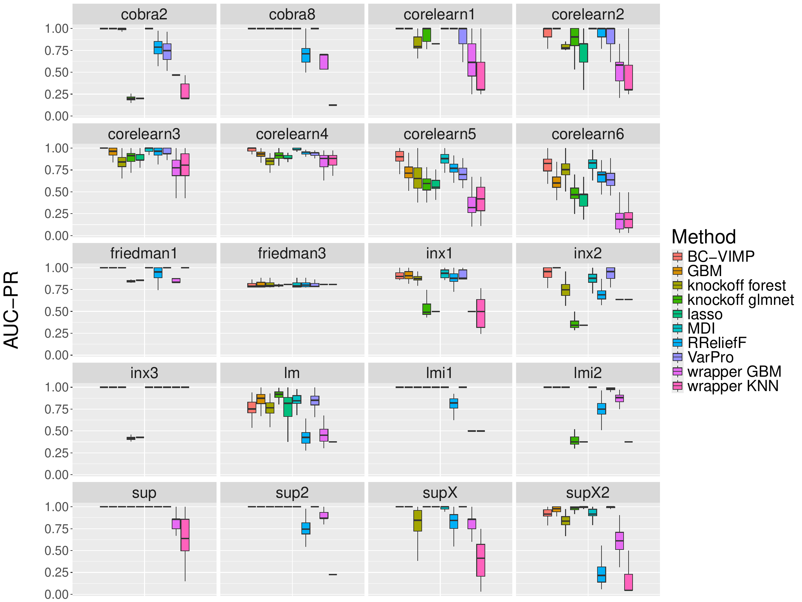
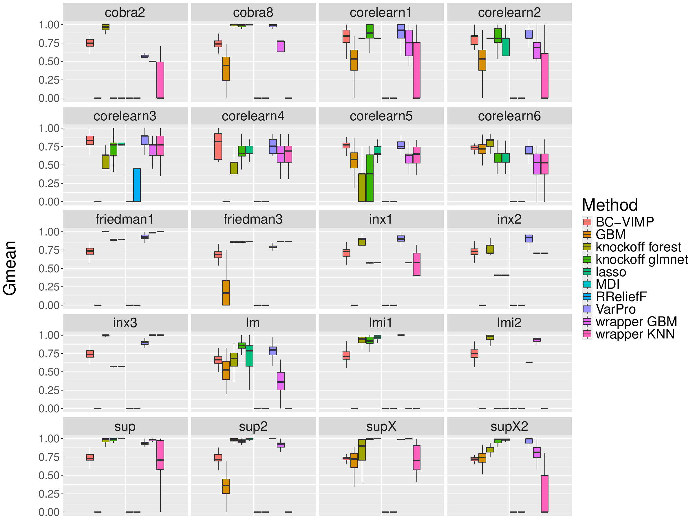
VarPro achieves consistently high AUC-PR and Gmean across all designs
Regression Results: Correlated Features
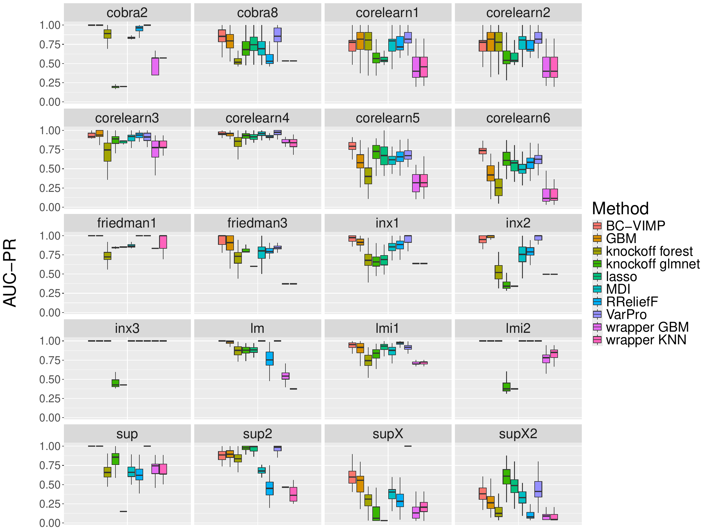
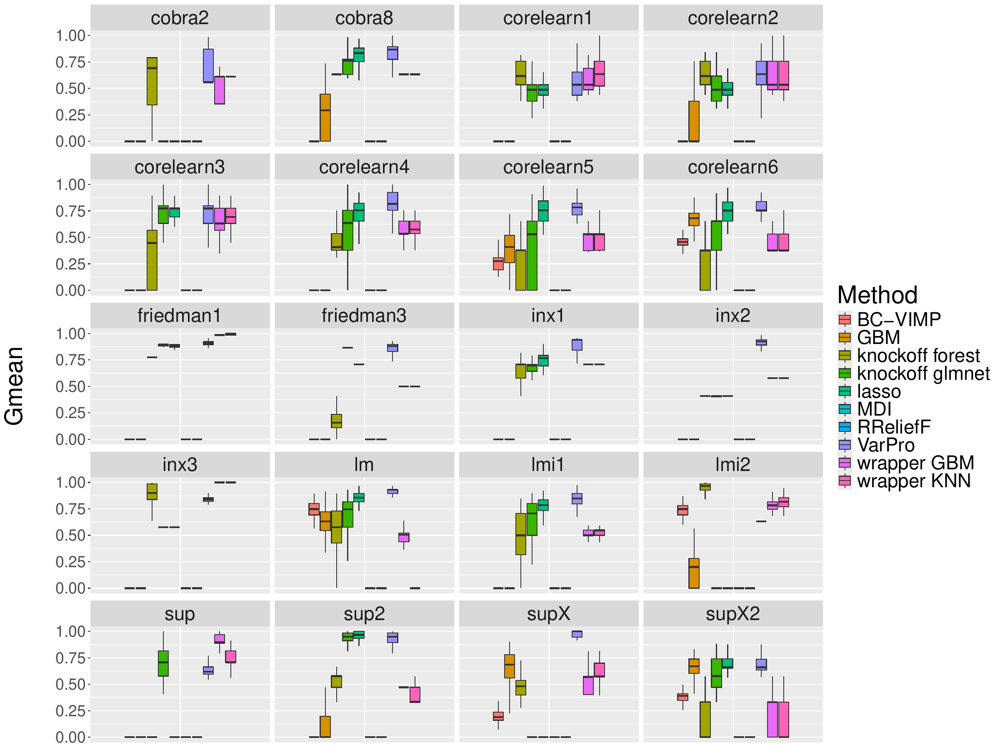
VarPro achieves consistently high AUC-PR and Gmean across all designs
Regression Results: Critical Difference Plots
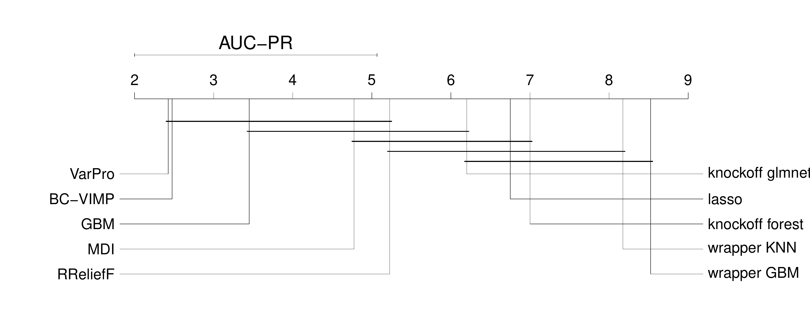
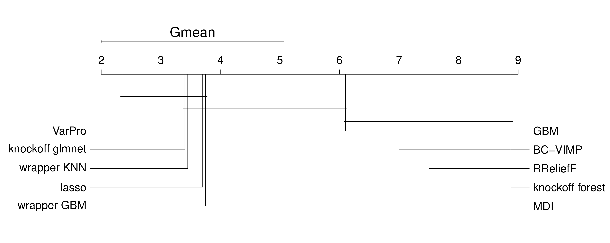
- AUC-PR: VarPro and BC-VIMP within top rank margin; VarPro achieves the best average rank
- Gmean: VarPro ranks first — strongest signal/noise separation among all comparison methods
Classification: Multiclass Simulation
\(L = 3\) classes, \(N = 2000\), \(p = 20\); signals \(X^{(1)}\)–\(X^{(9)}\); correlated noise pairs \((X^{(3)},X^{(10)})\), \((X^{(6)},X^{(15)})\), \((X^{(9)},X^{(20)})\) with \(\rho = 0.9\)
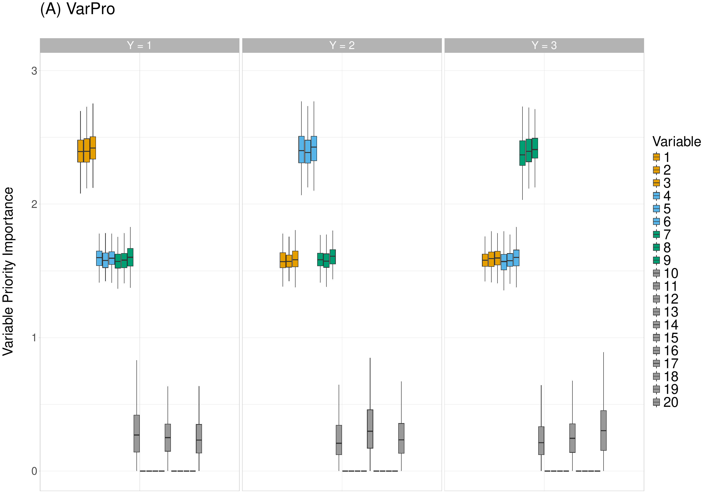
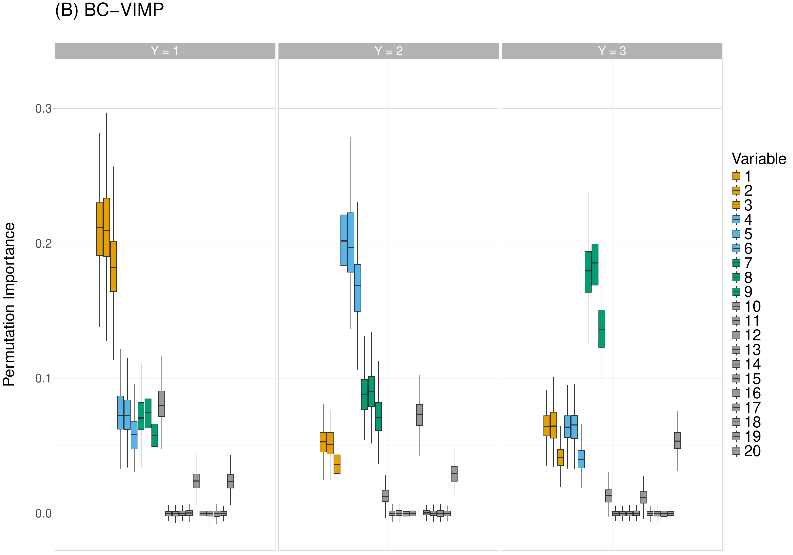
- VarPro (top): clear separation of signal and noise within each class
- BC-VIMP (bottom): correlation inflates noise variable scores — poor separation
Classification: High-Dimensional Microarray
(Linear Outcome)
22 cancer microarray datasets; \(N = 62\)–\(248\), \(p = 456\)–\(54{,}613\); outcomes: Linear, Quadratic, Quadratic+Interaction
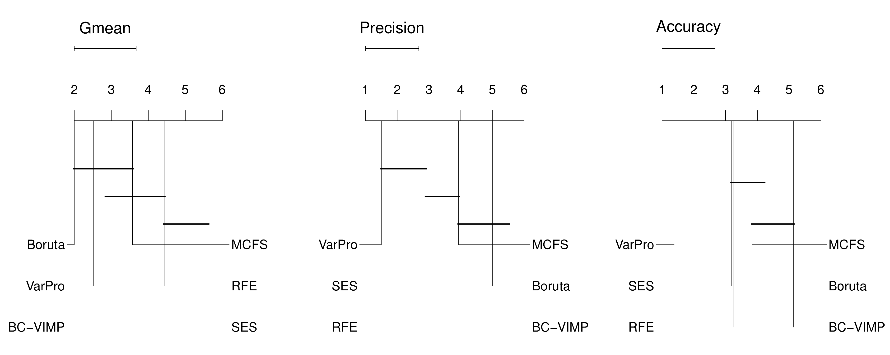
| Method | Description |
|---|---|
| VarPro | Rule-based variable priority (this work) |
| BC-VIMP | Permutation importance via random forests (rfsrc) |
| MCFS | Monte Carlo Feature Selection; threshold by permutations (rmcfs) |
| SES | Statistically Equivalent Signatures; constraint-based Bayesian network learning (MXM) |
| Boruta | Wrapper with artificial shadow features; random forest base learner (Boruta) |
| RFE | Recursive Feature Elimination; backward selection with random forests (caret) |
Classification: High-Dimensional Microarray
(Quadratic Outcome)
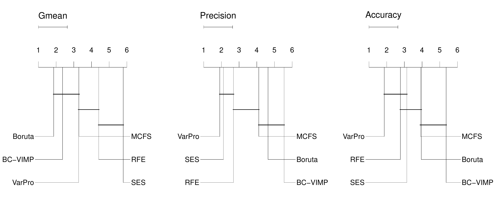
Classification: High-Dimensional Microarray
(Quadratic+Interaction)
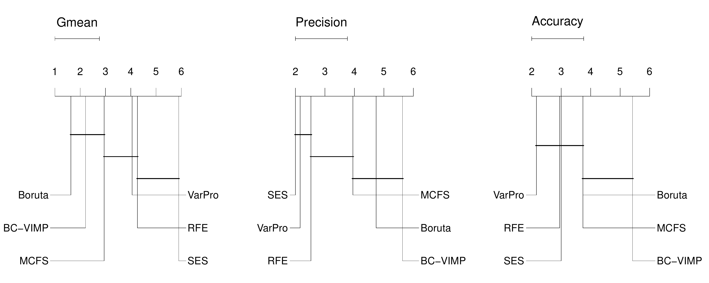
VarPro maintains balanced performance (gmean, precision, accuracy) across all complexity levelsSurvival Simulation: Setup and Results
High-dimensional survival: \(N = 200\), \(p \in \{500, 1000, 1500\}\), \(p_0 = 10\) correlated signal variables; censoring at 50% and 75%; Target \(\psi(\mathbf{X})\): integrated CHF estimated via random survival forests
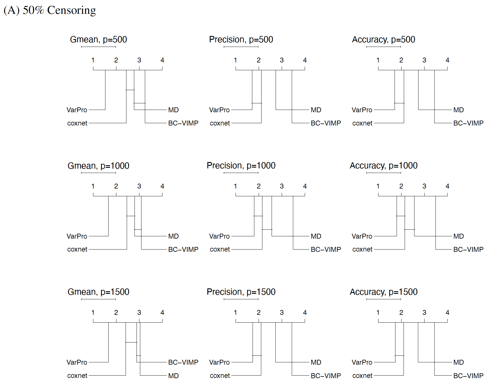
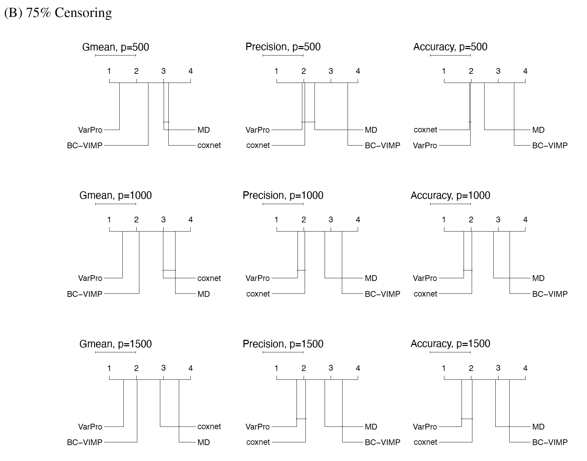
VarPro consistently outperforms coxnet, BC-VIMP, and MD (minimal depth) on gmean, precision, and accuracy
Survival Simulation: Numerical Summary
| Gmean | |||
|---|---|---|---|
| Method | \(p=500\) | \(p=1000\) | \(p=1500\) |
| VarPro | 0.95 | 0.96 | 0.97 |
| coxnet | 0.91 | 0.93 | 0.94 |
| BC-VIMP | 0.86 | 0.89 | 0.91 |
| MD | 0.88 | 0.88 | 0.89 |
Results at 50% censoring averaged over 100 runs.
VarPro achieves superior precision (0.55–0.57) while maintaining high accuracy (0.97–0.99)
Adult Glioma:
DNA Methylation Subtypes
Data: \(N = 880\) human tissues, \(p = 1241\) variables (CpG probes + clinical/molecular)
Outcome: 7 glioma subtypes — Classic, Codel, G-CIMP-high, G-CIMP-low, LGm6-GBM, Mesenchymal-like, PA-like
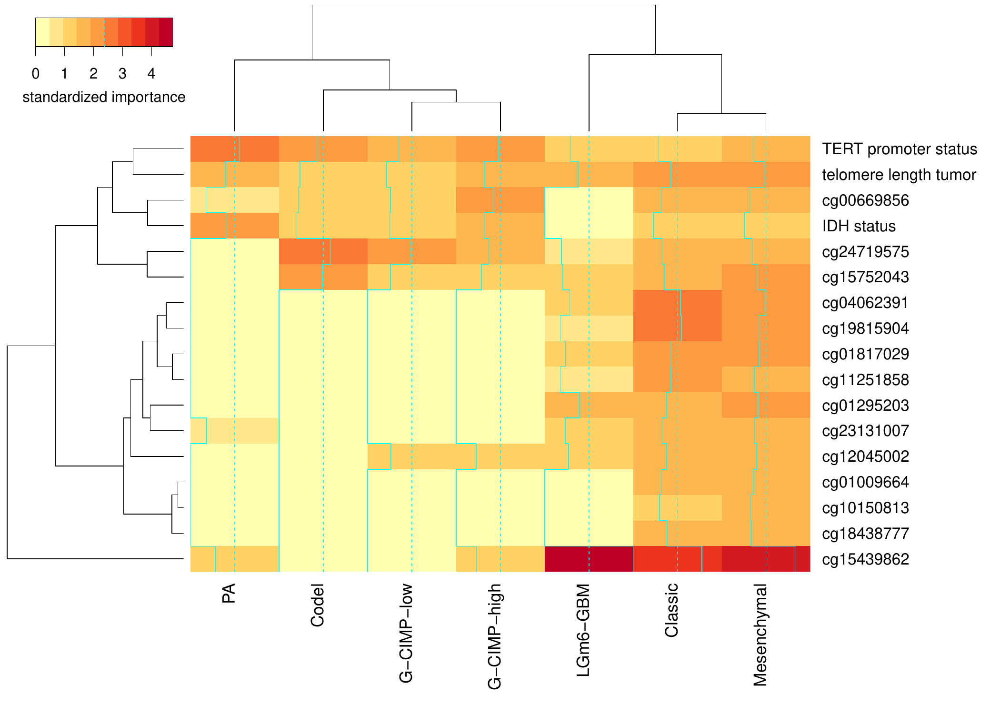
VarPro identifies IDH status, TERT promoter status, telomere length and multiple CpG probes as top discriminating features
Adult Glioma:
Top DNA Methylation Probes
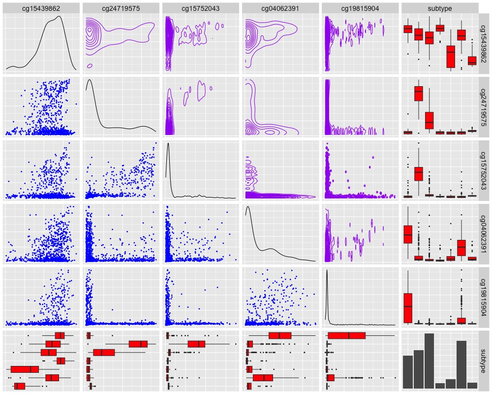
- Subtype-specific methylation patterns are clearly visible (e.g., cg15439862 distinguishes LGm6-GBM and Mesenchymal from other subtypes)
- VarPro probes add discriminatory power beyond known molecular variables
Heart Rate Recovery and Survival
Data: \(N = 23{,}701\) patients, \(p = 85\) variables; outcome: all-cause mortality
Target: Restricted mean survival time (RMST) at \(\tau = 3\) years, estimated via random survival forests
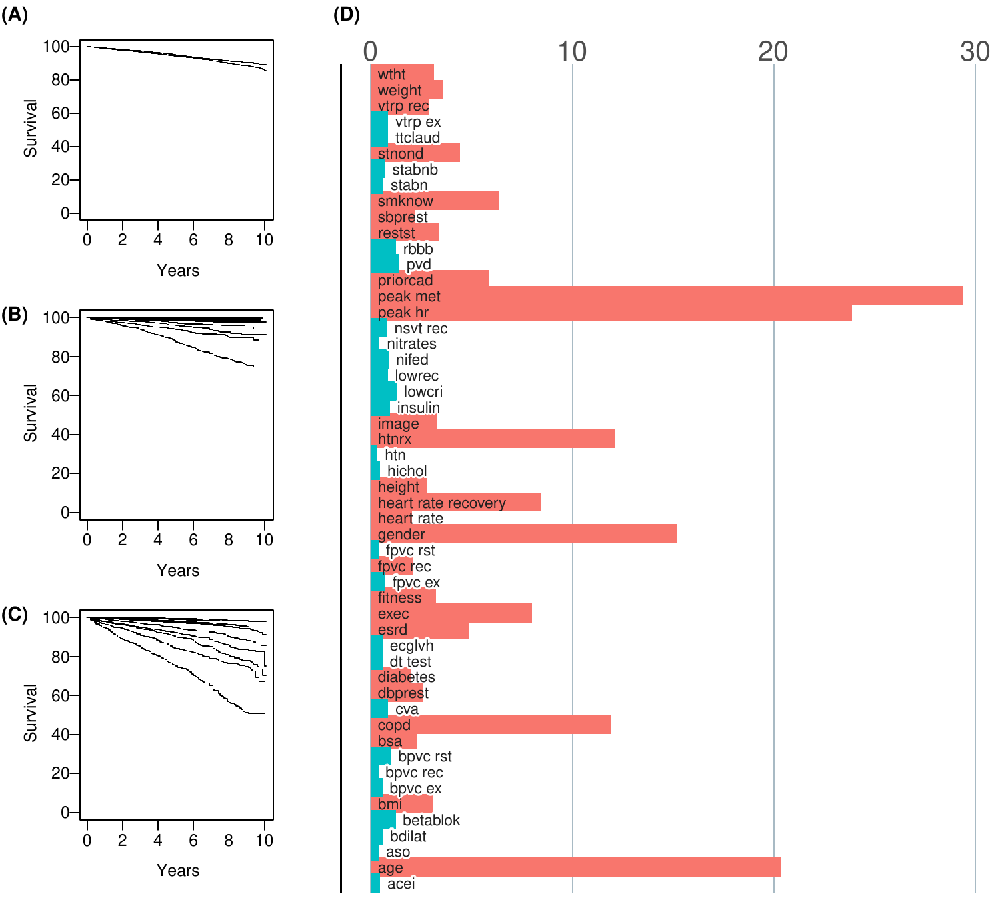
The figure shows results of heart rate recovery survival analysis using the VarPro procedure. (A) Survival by sex; (B) survival for women stratified by peak MET; (C) survival for men stratified by peak MET; (D) standardized variable importance (red = signal, blue = noise).
- Top signals: peak METs, age, heart rate recovery, sex (red bars)
- VarPro identifies sex as a top-5 variable — missed entirely by gradient boosting
- Stratified survival curves reveal interaction: men are more adversely affected by low peak METs than women
Properties of VarPro
Advantages:
- Model-independent
- Captures nonlinear effects
- Captures interaction effects
Unlike permutation importance:
- does not destroy feature correlations
- preserves local structure.
Overview
🌍 VarPro
Variable Priority for Global Variable Selection
- Model-independent variable importance
- Based on rule-and-release regions
- Targets population-level effects
- Identifies variables driving the conditional mean
👤 iVarPro
Variable Priority for Individual Variable Selection
- Extends VarPro to individual level
- Estimates local gradients within rules
- Captures heterogeneity across subjects
- Enables personalized interpretation
💻 Software
R package: varPro
- Efficient implementation of VarPro & iVarPro
- User-friendly workflow for analysis
Resources: - Tutorials and examples
🔗 https://www.varprotools.org/
Why care about individual importance?
- Average (global) importance can miss heterogeneity
e.g. \(y_i = \beta_0 + \beta_1 x_{i1} + \beta_2 x_{i2} + \dots + \beta_p x_{ip} + \varepsilon_i\) - Precision decisions need patient-specific drivers
- We want sensitivity: “how much does a tiny nudge in \(x^{(s)}\) change my outcome?”

From population to individual
- Population: “What matters on average?” (Breiman’s permutation importance)
- Individual: “What matters for this case?”
Let \(\def\grad{{ \nabla}}\def\x{{\bf x}}\def\xs#1{x^{(#1)}}\psi(\x) = \mathbb{E}(\phi(Y) | \x)\) be the unknown target function for the feature vector \(\x = (\xs{1}, \ldots, \xs{p})^T\), where \(Y\) is the outcome and the choice of \(\phi\) depends on the specific problem
iVarPro defines individual importance as the local gradient: \[ \grad \psi(\x) = \left(\frac{\partial \psi(\x)}{\partial \xs{1}}, \ldots, \frac{\partial \psi(\x)}{\partial \xs{p}}\right)^T := \left(g^{(1)}(\x), \ldots, g^{(p)}(\x)\right)^T \] The values \(g^{(s)}(\x)\) represent the individual variable importance for features \(\xs{s}, s = 1, \ldots, p\)
Intuition: gradient = sensitivity to small changes in \(x^{(s)}\) at this \(\x\)
Core idea in one picture
- Use tree rules to define a local region \(R\) around a point
-
Release the constraint on one variable \(x^{(s)}\) to get variation only along that axis
\(\quad\quad\) Random Forest
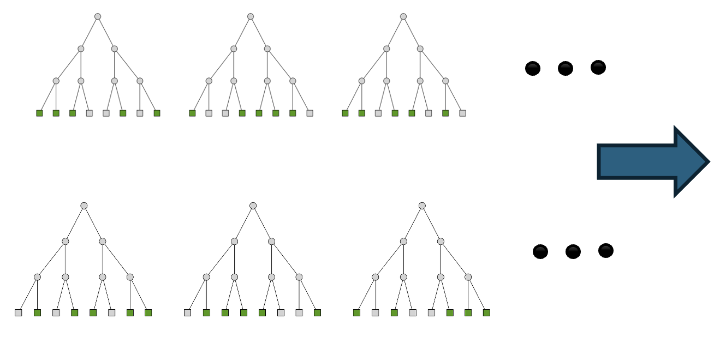
Variable Priority (VarPro) rules
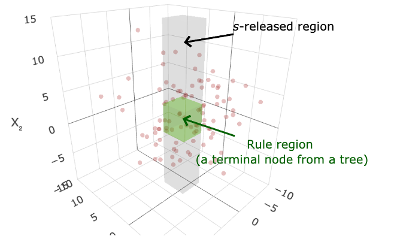
Core idea in one picture
- Use tree rules (VarPro) to define a local region \(R\) around a point
-
Release the constraint on one variable \(x^{(s)}\) to get variation only along that axis
- Fit a tiny local linear regression to get the slope = gradient
- Average over many rules to obtain individual variable priority (iVarPro) score

Why not just SHAP or LIME?
- SHAP (Shapley Additive Explanations) or LIME (Local Interpretable Model-Agnostic Explanations) depend on the fitted model and a background distribution
- Perturbations can create unrealistic points
- iVarPro stays model-independent, uses observed data only, and targets directional derivatives directly
Working theory: when the surface \(\psi(x)\) is smooth locally, these tiny local regressions recover gradients well
VarPro: using rules to obtain local gradients
The importance of a variable \(s \in \{1, \ldots, p\}\) is assessed by comparing estimates within a rule’s region \(R\) to those in its corresponding release region, defined as the region \(R\) expanded where constraints on \(\xs{s}\) are removed [1]
Let \(\x_0 := \x_0(R)\) denote the centroid of \(R\), and assign its gradient to all cases in \(R\). To define the gradient at \(\x_0 = (x_0^{(1)},\ldots,x_0^{(p)})^T\) along coordinate \(s\), let \(\psi_R^{(s)}(z)\) represent the evaluation of \(\psi\) at \(\x_0\), with the \(s\)-th coordinate perturbed by an increment \(z\): \[ \psi_R^{(s)}(z) = \psi(x_0^{(1)},\ldots,x_0^{(s-1)},x_0^{(s)}+z,x_0^{(s+1)},\ldots,x_0^{(p)}) \] By construction, \(\psi_R^{(s)}(0) = \psi(\x_0)\), and the gradient of \(\psi\) at \(\x_0\) along coordinate \(s\) is formally given by \[ g_R^{(s)} := g_R^{(s)}(\x_0) =\lim_{z\rightarrow 0} \frac{\psi_R^{(s)}(z)-\psi_R^{(s)}(0)}{z} \]
Gradient estimation via local linear regression
To estimate the gradient, we employ a local linear regression model. In small regions around \(\x_0(R)\) along the coordinate direction \(s\), we approximate \(\psi\) using the linear model: \[ \psi_R^{(s)}(z) = \psi_R^{(s)}(0) + z g_R^{(s)} \] Given training data \((\x_1, y_1),\ldots,(\x_n, y_n)\), we regress \(\{y_i\}\) on the \(s\)-coordinate features \(\{x_i^{(s)}\}\) using an intercept-slope model based on data local to \(R\). The gradient \(g_R^{(s)}\) is estimated using the least squares estimate of the slope
Standardized covariates
To systematically control the extent of this expansion, we introduce an index \(\scriptsize \def\l{\lambda} \def\psihat{\widehat{\psi}} \def\ghat{\widehat{g}} \def\bhat{\widehat{\beta}} 0 \le \l \le \l_0\) that determines the proportion of individuals selected from the release region \(\scriptsize R^{(s)}\). Larger values of \(\scriptsize \l\) correspond to a greater number of included individuals. The expanded region is then defined as \(\scriptsize R(s,\l) = R \cup R_\l^{(s)}\), where \(\scriptsize R_\l^{(s)}\) is a restricted subset of \(\scriptsize R^{(s)}\) determined by \(\scriptsize \l\)
we center \(\scriptsize x_i^{(s)}\) at the centroid value \(\scriptsize x_0^{(s)}(R)\) and then scale it to have unit length, denoting the transformed values by \(\scriptsize z_i^{(s)}\):
\[ \scriptsize z_i^{(s)} = \frac{x_i^{(s)} - x_0^{(s)}(R)} {\sqrt{\displaystyle\sum_{\x_j\in R(s,\lambda)}(x_j^{(s)} - x_0^{(s)}(R))^2}} %\quad \x_i\in R(s,\lambda) \]
The local gradient is estimated via least squares regression using the data \(\scriptsize \{z_i^{(s)},\psihat(\x_i)\}\) within \(\scriptsize R(s,\lambda)\): \[ \scriptsize \psihat(\x_i) = \alpha_R^{(s)} + z_i^{(s)} \beta_R^{(s)} + \varepsilon_i, \quad \x_i \in R(s,\lambda) \] The least-squares slope is then used as the local gradient estimate: \(\scriptsize \ghat_R^{(s)}:=\bhat_R^{(s)}\)
Cross-Validation for optimizing the fit
For a given \(\scriptsize \def\l{\lambda} \def\fhat{\widehat{f}} \l\), the Predicted Residual Sum of Squares (PRESS) statistic is computed as follows. The leave-one-out (LOO) residual for observation \(\scriptsize i\) is: \[ {\tiny e_i = \psihat(\x_i) - \fhat^{(-i)}(z_i^{(s)}), } \] where \(\scriptsize \fhat^{(-i)}(z_i^{(s)})\) is the least squares predicted value at \(\scriptsize z_i^{(s)}\) when the \(\scriptsize i\)-th observation is excluded from the regression fit. The PRESS statistic is then given by: \[ {\tiny \text{PRESS}(s,\l) = \frac{1}{|R(s,\l)|} \sum_{i\in R(s,\l)} e_i^2 } \] Since local regression follows a linear model, the PRESS statistic simplifies in terms of leverage values \(\scriptsize h_i\): \(\scriptsize e_i = \frac{\psihat(\x_i) - \fhat(z_i^{(s)})}{1 - h_i},\) where \(\scriptsize h_i\) is the leverage for \(\scriptsize z_i^{(s)}\) and \(\scriptsize \fhat\) is the least squares predictor. Thus, the PRESS statistic can be rewritten as: \[{\tiny \text{PRESS}(s,\l) = \frac{1}{|R(s,\l)|} \sum_{i\in R(s,\l)} \left( \frac{\psihat(\x_i) - \fhat(z_i^{(s)})}{1 - h_i} \right)^2 } \] The optimal \(\scriptsize \l^*=\text{argmin}_\l \text{PRESS}(s,\l)\) is selected
iVarPro pipeline
- Build VarPro rules (randomized trees)
→ small rectangular regions \(R\)
- For each feature \(s\) and rule \(R\):
-
Release \(x^{(s)}\) to form \(R^{(s)}(\lambda)\)
-
Standardize \(x^{(s)}\) around the region centroid
- Regress \(\widehat{\psi}(x)\) on standardized \(x^{(s)}\), choose \(\lambda\) by PRESS (LOO)
- Slope \(\Rightarrow \widehat{g}^{(s)}_R\)
-
Release \(x^{(s)}\) to form \(R^{(s)}(\lambda)\)
- For case \(x_i\): average \(\widehat{g}^{(s)}_R\) over all rules containing \(x_i\)
Tip: \(\widehat{\psi}\) from RF/GBM/XGBoost smooths noise → better local slopes

Synthetic experiments
Model 1 is generated according to a piecewise function:
\[ \tiny{ \psi(x^{(1)}, x^{(2)}) = \begin{cases} 1, & x^{(2)} \leq 0.25, \\ 15x^{(2)}, & x^{(1)} \leq 0.5 \text{ and } x^{(2)} > 0.25, \\ 7x^{(1)} + 7x^{(2)}, & x^{(1)} > 0.5 \text{ and } x^{(2)} > 0.25 \end{cases} } \]
Model 2 is a quadratic function of the predictors, defining the response as a function of the squared Euclidean norm:
\[ \tiny{ \psi(x^{(1)}, x^{(2)}) = 5r 1_{\{r \leq 0.5\}}, \quad \text{where } r = (x^{(1)})^2 + (x^{(2)})^2 } \]
Model 3 follows a simple multiplicative interaction between the two predictors:
\[ \tiny{ \psi(x^{(1)}, x^{(2)}) = 6x^{(1)}x^{(2)} } \]
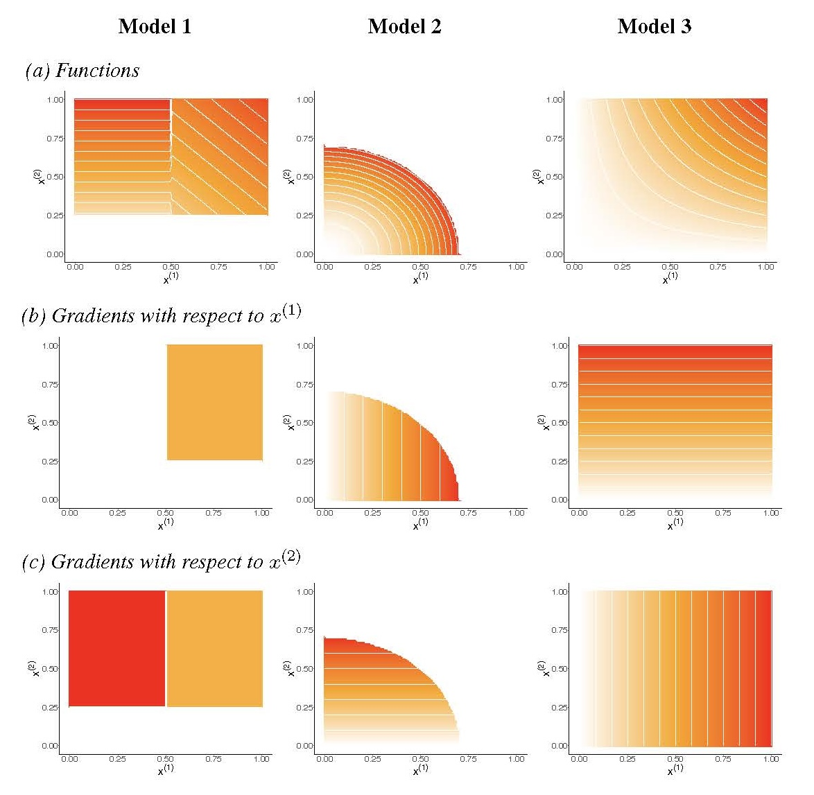
Comparison procedures
We compare iVarPro to three established methods:
CSRF (Case-Specific Random Forests) importance [2], implemented using the
rangerR package [3]SHAP, computed using the
treeshapR package [4]LIME, computed using the
limeR package [5]
Both SHAP and LIME were applied to a trained XGBoost model [6], with hyperparameters selected via cross-validation. We also evaluate three additional versions of iVarPro based on different choices of the external predictor \({\widehat{\psi}}\):
iVarPro-raw: No external model is used; local gradients are estimated directly using the raw response values \(y\)
iVarPro-gbm: The external predictor \({\widehat{\psi}}\) is a gradient tree boosted model fit using the
gbmR package [7]iVarPro-xgb: The external predictor \({\widehat{\psi}}\) is an XGBoost model
Simulation overview
- Benchmark functions (piecewise, radial, interaction); \(p \in \{10,200\}\), \(n \in \{250,2000\}\)
- Correlated/uncorrelated predictors: features for the uncorrelated setting are independently drawn from a Uniform\((0,1)\) distribution, and predictors for the correlated setting are drawn from a normal copula with common correlation \(\rho = 0.8\)
- Compare iVarPro vs CSRF, SHAP, LIME
- Metrics: Kendall’s \(\tau_b\), C-index, PR-AUC (ranking of true \(|\nabla\psi|\))
Simulation result
Kendall’s \(\tau_b\) scores evaluating the performance of iVarPro and comparison procedures in a synthetic setting. Red error bars denote 95% confidence intervals for the mean, slightly offset to the right for visual clarity
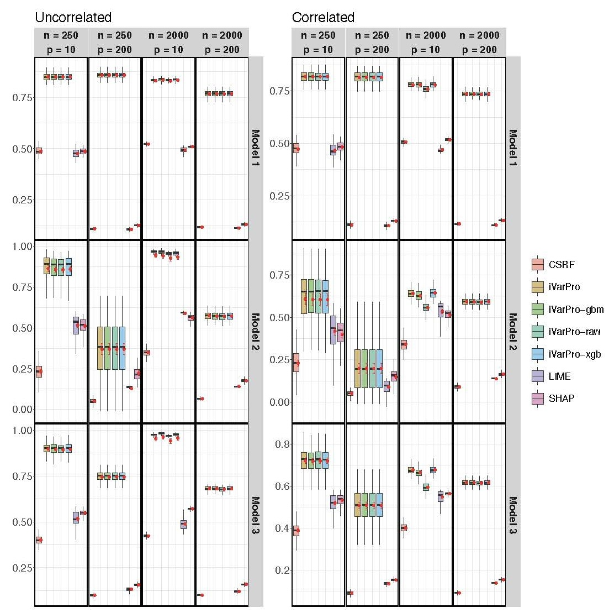
Simulation result
C-index scores evaluating the performance of iVarPro and comparison procedures in a synthetic setting
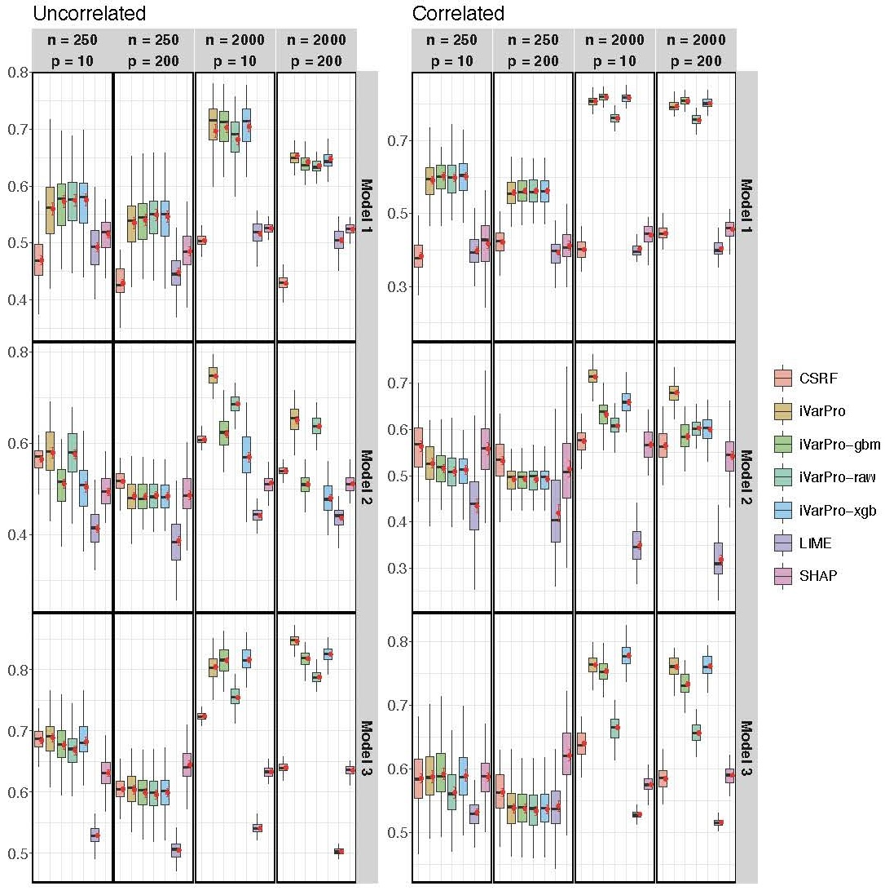
Simulation result
PR-AUC scores
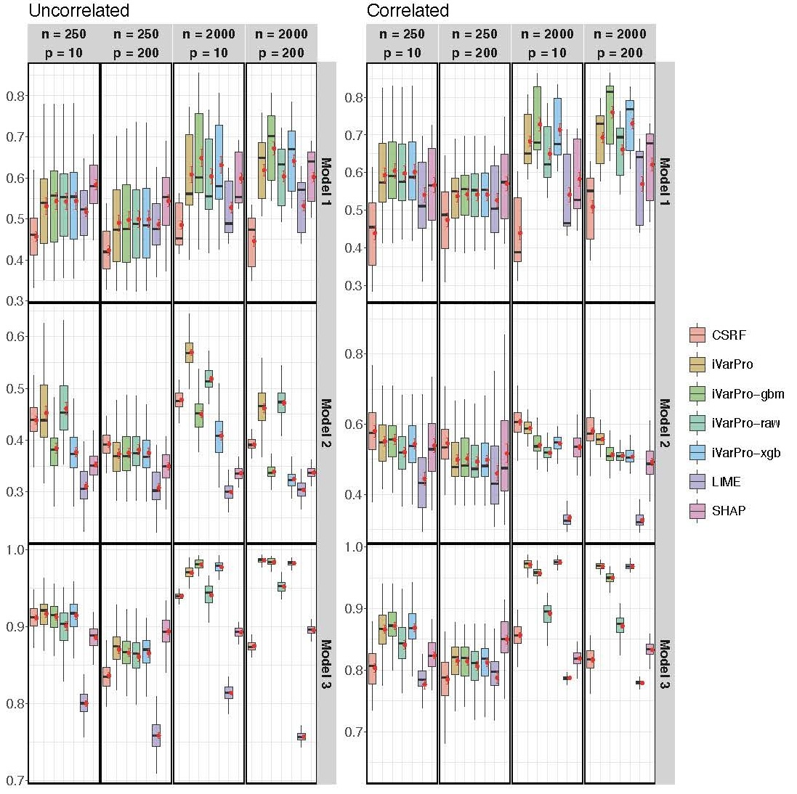
MSE scores
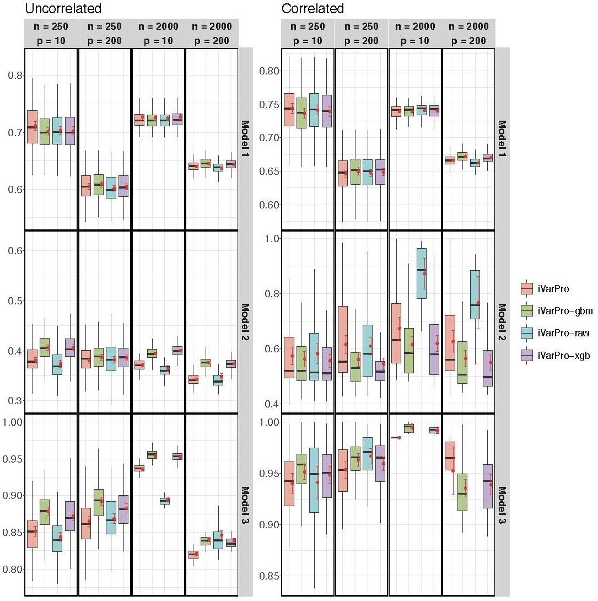
A single run of Model 2 (uncorrelated)
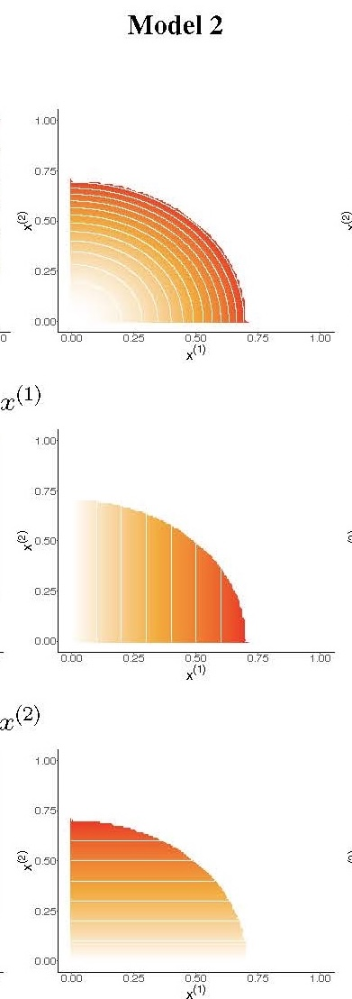
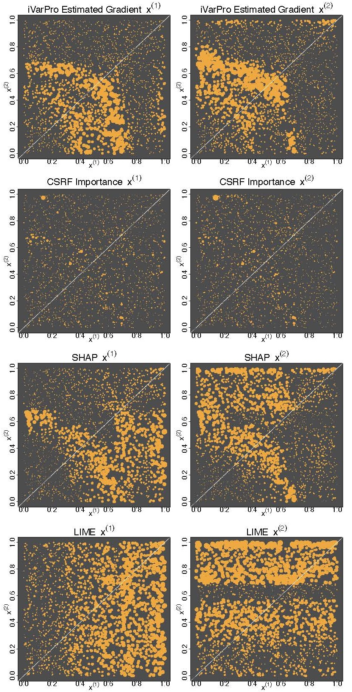
A single run of Model 2 from iVarPro
Uncorrelated
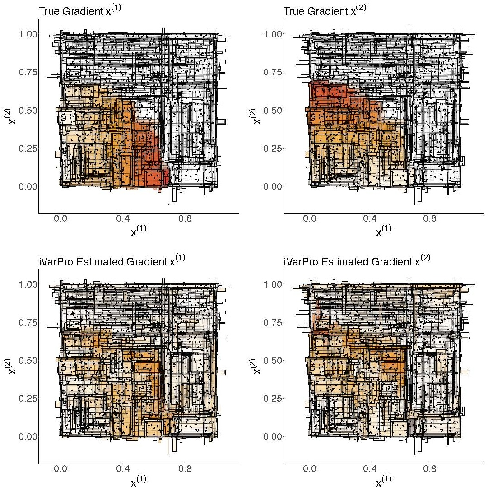
Correlated
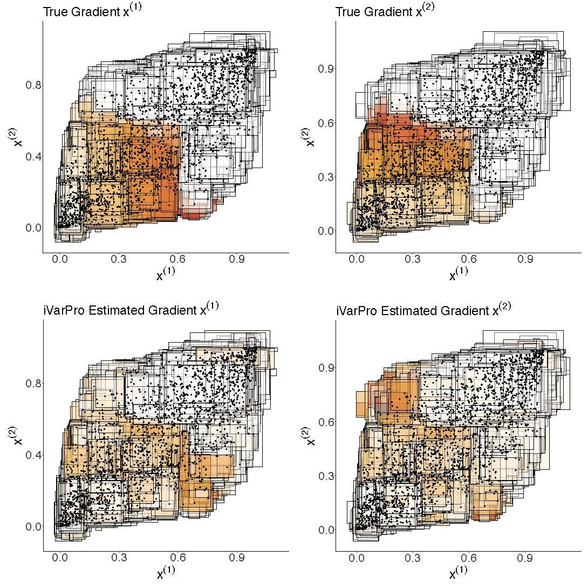
Synthetic survival example
The true (potentially unobserved) survival time:
\[
\def\Xs#1{X^{(#1)}}
\def\x{{\bf x}}
\def\X{{\bf X}}
\def\PP{\mathbb{P}}
\def\xs#1{x^{(#1)}}
{\tiny
T^o = \log
\left[1 + V +
\exp(\sum_{s=1}^4 \beta_s \Xs{s}
+ \beta_5 \Xs{5} 1_{\{\Xs{2} > 0.5\}} ) \right]
}
\] The variable \(\scriptsize V\) follows a standard exponential distribution and the features \(\scriptsize \Xs{s}\) is drawn from Uniform\(\scriptsize (0,1)\). We take \(\scriptsize \psi(\x)\) to be the restricted mean survival time (RMST) [11] up to a specified time horizon \(\scriptsize \tau>0\): \({\tiny \psi(\X) = \int_0^\tau S(t | \X)\,dt,}\) where \({\tiny S(t|\x) = \PP\{T^o > t | \X=\x\}}\)
To derive a closed-form expression for the gradient of \(\scriptsize \psi(\x)\), we have \({\tiny S(t|\x) =\PP\left\{ \log [1 + V + A(\x) ] > t \right\}},\) where \({\tiny A(\x) = \exp (\sum_{s=1}^4 \beta_s \xs{s}}\) \({\tiny+ \beta_5 \xs{5} 1_{\{\xs{2} > 0.5\}})}\)
We obtain the partial derivatives: \[ \def\L{\Lambda} {\tiny \begin{array} \frac{\partial \psi(\x)}{\partial \xs{s}} &=& \beta_s A(\x) e^{A(\x)} \L(\tau), \quad s = 1,2,3,4\\ \frac{\partial \psi(\x)}{\partial \xs{5}} &=& \beta_5 A(\x) e^{A(\x)} \L(\tau) 1_{\{\xs{2} > 0.5\}} \end{array} } \] Parameters were \(\beta_s = 2\) for \(s = 1, \ldots, 5\), and additionally, 15 noise variables were included, resulting in a total of \(p = 20\) features. Random censoring at a 25% rate was applied, and a total of \(n = 2000\) data points were sampled
Synthetic survival example
The true (potentially unobserved) survival time:
\[
\def\Xs#1{X^{(#1)}}
\def\x{{\bf x}}
\def\X{{\bf X}}
\def\PP{\mathbb{P}}
\def\xs#1{x^{(#1)}}
{\tiny
T^o = \log
\left[1 + V +
\exp(\sum_{s=1}^4 \beta_s \Xs{s}
+ \beta_5 \Xs{5} 1_{\{\Xs{2} > 0.5\}} ) \right]
}
\] The variable \(\scriptsize V\) follows a standard exponential distribution and the features \(\scriptsize \Xs{s}\) is drawn from Uniform\(\scriptsize (0,1)\). We take \(\scriptsize \psi(\x)\) to be the restricted mean survival time (RMST) [11] up to a specified time horizon \(\scriptsize \tau>0\): \({\tiny \psi(\X) = \int_0^\tau S(t | \X)\,dt,}\) where \({\tiny S(t|\x) = \PP\{T^o > t | \X=\x\}}\)
To derive a closed-form expression for the gradient of \(\scriptsize \psi(\x)\), we have \({\tiny S(t|\x) =\PP\left\{ \log [1 + V + A(\x) ] > t \right\}},\) where \({\tiny A(\x) = \exp (\sum_{s=1}^4 \beta_s \xs{s}}\) \({\tiny+ \beta_5 \xs{5} 1_{\{\xs{2} > 0.5\}})}\)
We obtain the partial derivatives: \[ \def\L{\Lambda} {\tiny \begin{array} \frac{\partial \psi(\x)}{\partial \xs{s}} &=& \beta_s A(\x) e^{A(\x)} \L(\tau), \quad s = 1,2,3,4\\ \frac{\partial \psi(\x)}{\partial \xs{5}} &=& \beta_5 A(\x) e^{A(\x)} \L(\tau) 1_{\{\xs{2} > 0.5\}} \end{array} } \] The figure below shows the estimated iVarPro values where \(\scriptsize \xs{5}\) has a smaller effect that is modulated by \(\scriptsize \xs{2}\) and influences survival only \(\scriptsize \xs{2} > 0.5\)
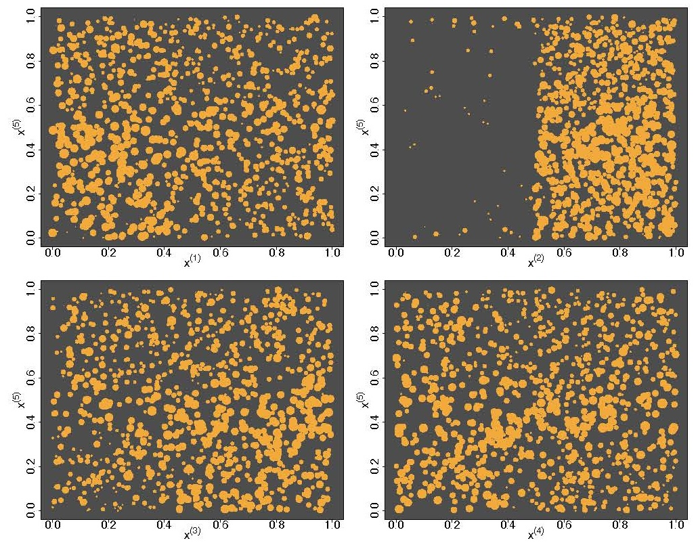
Survival use case: CAD treadmill cohort
- 18,964 patients who underwent treadmill exercise testing for the evaluation of suspected coronary artery disease (CAD). Notably, all patients had a clinically normal resting electrocardiogram (ECG) and no known history of cardiovascular disease at the time of testing
- outcome: all-cause mortality
- \(\psi\): integrated cumulative hazard; \(\widehat{\psi}\): random survival forest
Results
- Population leaders: Peak METs (Metabolic Equivalents at Peak Exercise), Duke Treadmill Score (DTS)
- iVarPro finds ECG features with localized importance
ECG vs Clinical gradients
Visualizing clinical variable (Peak METs) versus ECG variable (ST-segment above the baseline)
The top panel scales circle size by the Peak METs gradient, and the bottom panel scales by the ECG gradient. Data are stratified by patient mortality
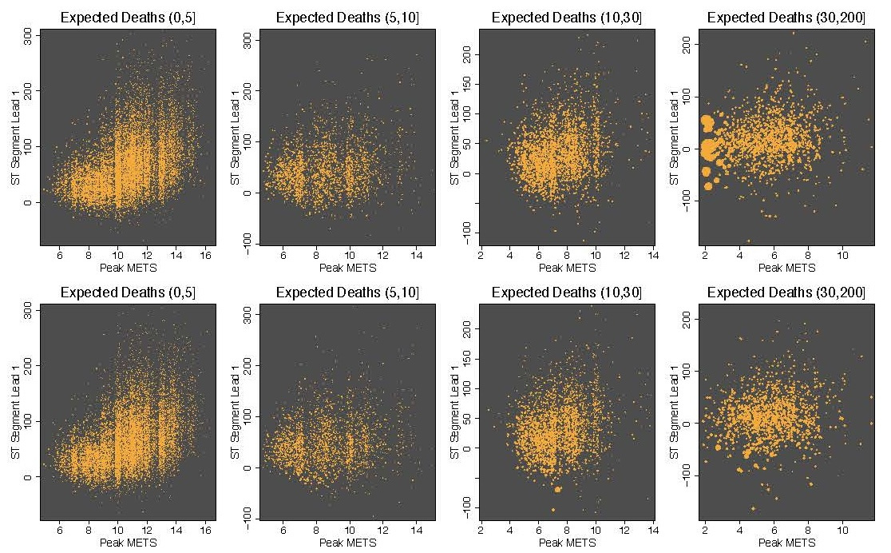
Same as left, but with the vertical axis representing the Duke Treadmill Score (DTS). Circle are scaled to the gradients for Peak METs and DTS, respectively
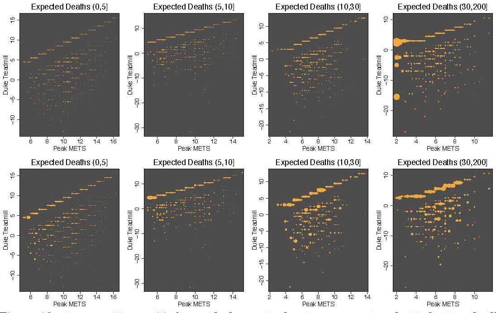
Kaplan–Meier sanity checks
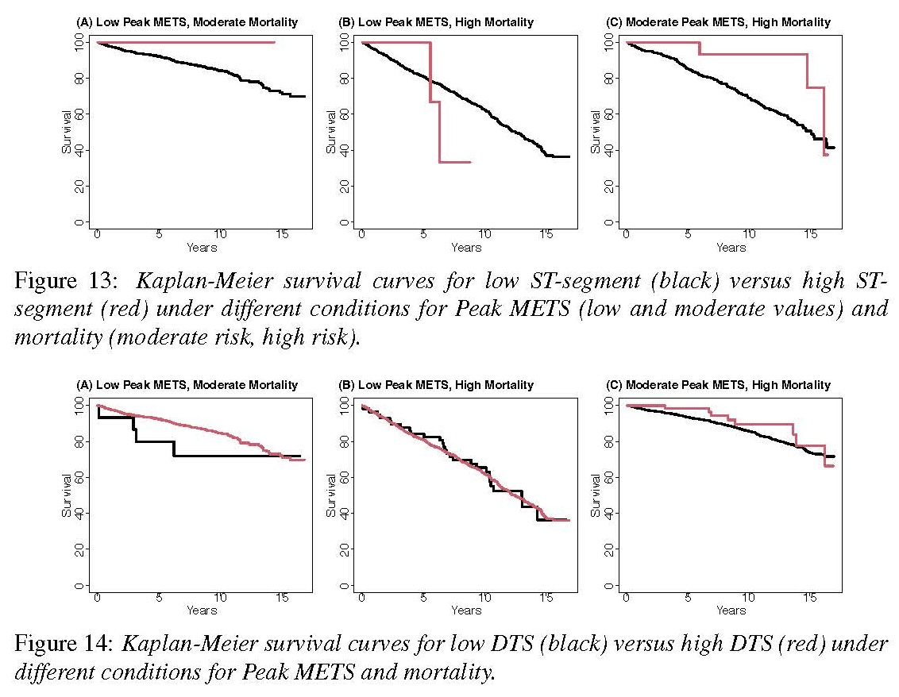
Summary
-
iVarPro = local gradient importance using rules + release
-
Model-independent, data-grounded, individualized
- Robust in high \(p\), correlated features; empirically strong vs SHAP/LIME/CSRF
- Practical for precision medicine: surfaces what matters for this person
Message: population signals + patient-specific signals → better precision interpretation
Overview
🌍 VarPro
Variable Priority for Global Variable Selection
- Model-independent variable importance
- Based on rule-and-release regions
- Targets population-level effects
- Identifies variables driving the conditional mean
👤 iVarPro
Variable Priority for Individual Variable Selection
- Extends VarPro to individual level
- Estimates local gradients within rules
- Captures heterogeneity across subjects
- Enables personalized interpretation
💻 Software
R package: varPro
- Efficient implementation of VarPro & iVarPro
- User-friendly workflow for analysis
Resources: - Tutorials and examples
🔗 https://www.varprotools.org/
The varPro R package
A unified, rule-based interface for variable prioritization across supervised, unsupervised, and individual-level settings — using observed data only, without synthetic covariates or permutations.
Key design goals:
- Reproducible, observed-data workflows
- Scalable tree engine · parallel execution
The varPro Framework
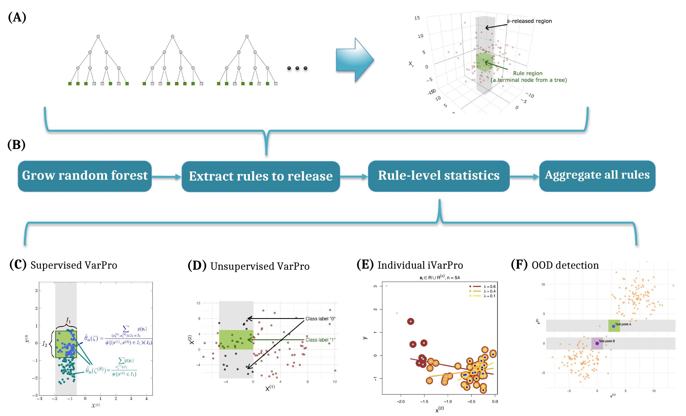
(A) Random forest grows trees with terminal-node rules → (B) Four-step rule-and-release ensemble: Grow · Extract · Compute statistic · Aggregate → (C–F) Analysis modes: Supervised VarPro · Unsupervised UVarPro · Individual iVarPro · OOD (out-of-distribution) detection outPro
Rule-and-Release: The Core Idea
Unified algorithm — 5 steps:
- Grow a forest, extract terminal-node rules \(\{\zeta_k\}\)
- Release each rule by dropping constraints on variable \(s\)
- Compute problem-specific statistic \(T_{k,s}\) from \(R_k\) and \(R_k^{(s)}\)
- Aggregate \(\{T_{k,s}\}\) across rules and trees
- Return structured objects for downstream analysis
Four analysis modes — same algorithm, different \(T_{k,s}\):
| Mode | Statistic |
|---|---|
| VarPro | Conditional mean contrast |
| UVarPro | \(\ell_1\)-logistic models |
| iVarPro | Local gradient (slope) |
| outPro | Subspace distance |
No synthetic covariates, no permutations — all contrasts use observed data only.
Core Functions
| Function | Description | Visualization | Helpers |
|---|---|---|---|
varpro() |
Supervised global variable importance (regression, classification, survival) |
partialpro(), plot()
|
importance() |
cv.varpro() |
Supervised importance with cross-validated cutoff selection | — | — |
uvarpro() |
Unsupervised global variable importance | sdependent() |
importance(), get.beta.entropy()
|
ivarpro() |
Supervised individual (case-specific) variable importance |
shap.ivarpro(), partial.ivarpro()
|
— |
isopro() |
Anomalous observation detection via isolation forests | — | predict() |
outpro() |
Supervised and unsupervised OOD detection | — | outpro.null() |
varpro() — Supervised Variable Priority
Fit and extract importance
## names zscores standardize
## 1 lstat 14.46825 1.0000000
## 2 rm 9.88023 0.6829607
## 3 nox 7.23514 0.5000259
## 4 dis 6.85193 0.4735151
## 5 ptratio 5.54280 0.3831861
## 6 tax 4.60117 0.3180329
cv.varpro()
— Cross-Validated Cutoff Selection
Cross-validated importance with conservative / liberal variable sets
## Conservative selected variables:
## names zscores
## 1 lstat 14.20183
## 2 rm 9.75342
## 3 nox 7.11208
## 4 dis 6.70194
## 5 ptratio 5.48922
## zcut.conserve: 4.52Returns a list with:
-
$imp— full importance table -
$imp.conserve— conservative variable set -
$imp.liberal— liberal variable set -
$zcut.conserve— cross-validated z-score cutoff -
$err— CV grid of cutoffs and errors
When to use cv.varpro() vs varpro(): Use cv.varpro() when you need a data-driven cutoff for variable selection rather than a full ranking.
uvarpro()
— Unsupervised Variable Priority
Fit, extract importance scores
## names zscores
## 1 lstat 8.341252
## 2 rm 7.916084
## 3 dis 6.204817
## 4 nox 5.983761
## 5 age 4.742198
## 6 ptratio 4.210573## rm lstat nox dis age
## [1,] 0.14823 0.19204 0.08341 0.11732 0.04215
## [2,] 0.11092 0.21837 0.10984 0.09841 0.03672
## [3,] -0.09341 0.17620 0.12048 0.14230 0.05891
## [4,] 0.06482 -0.15330 0.09317 0.10845 0.02140
## [5,] 0.12047 0.18274 0.07632 0.13502 0.04892
ivarpro() — Individual Variable Priority
Case-specific importance matrix
## age gender bmi peak.vo2 chemo
## [1,] 0.041 NA 0.028 0.312 NA
## [2,] NA NA 0.011 0.284 0.022
## [3,] 0.014 0.031 NA 0.271 NA
## [4,] 0.033 NA 0.019 0.290 0.017 Returns an \(N \times p\) matrix of case-specific importance values. NA = variable not important for that case.

partial.ivarpro() · isopro() · outpro()
partial.ivarpro() — case-level partial plot

Case-specific importance for peak.vo2, points colored by interval, sized by outcome y.
isopro() — anomaly scoring
## crim zn indus chas nox
## 138 0.35233 0 21.89 0 0.624
## 139 0.24980 0 21.89 0 0.624
## 140 0.54452 0 21.89 0 0.624
## 477 4.87141 0 18.10 0 0.614
## 478 15.02340 0 18.10 0 0.614
## 479 10.23300 0 18.10 0 0.614Summary
What varPro delivers
Unified interface — one package for supervised, unsupervised, and individual-level importance via consistent S3 generics
Observed-data only — no permutations, no synthetic covariates; rule/release contrasts use the original data
-
Four analysis modes each built on the same rule-and-release core:
-
varpro()/cv.varpro()— global screening -
uvarpro()— unsupervised feature selection -
ivarpro()— case-specific interpretation -
outpro()/isopro()— deployment diagnostics
-
Scalable — parallel execution, interfaces with
randomForestSRC
Looking ahead
- Software: varPro R and Python packages and vignettes
Manuscript:
Lu M. and Ishwaran H. (2024). Model-independent variable selection via the rule-based variable priority. (under review).
Lu M. and Ishwaran H. (2026). General OOD Detection via Model-aware and Subspace-aware Variable Priority. (under revision at Knowledge and Information Systems).
Publication:
Lu M. and Ishwaran H. (2025). Individual variable priority: A model-independent local gradient method for variable importance. Artifical Intelligence Review. 58:407
Zhu L., Lu M. and Ishwaran H. (2026). Variable priority for unsupervised variable selection. Pattern Recognition. Volume 172, Part D.
Slides: https://luminwin.github.io/varProSoftware/VarPro.html
Thank You!
Questions welcome!